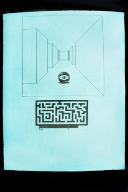

Um labirinto visto de dentro (1970)
Em Maze War, um dos primeiros experimentos do gênero, o jogador via um labirinto desenhado com linhas, como se estivesse dentro dele. Versões em rede permitiam encontrar outros jogadores pelos corredores. Uma curiosidade é que eles podiam aparecer como olhos flutuantes, uma forma simples de mostrar para onde cada pessoa estava olhando.
